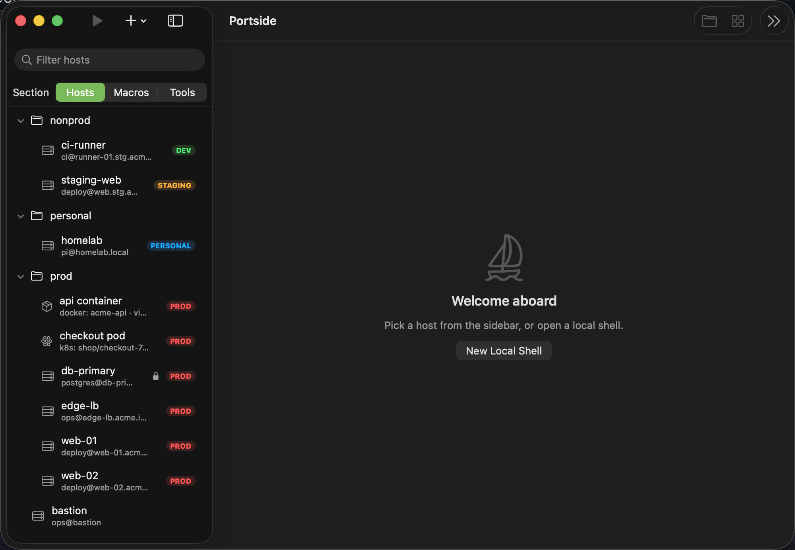
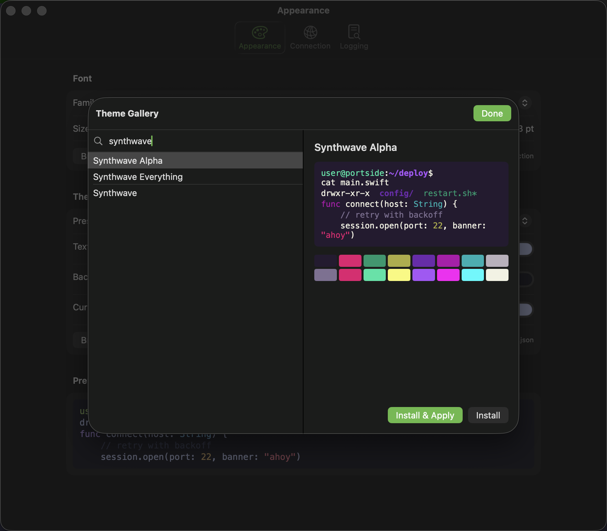
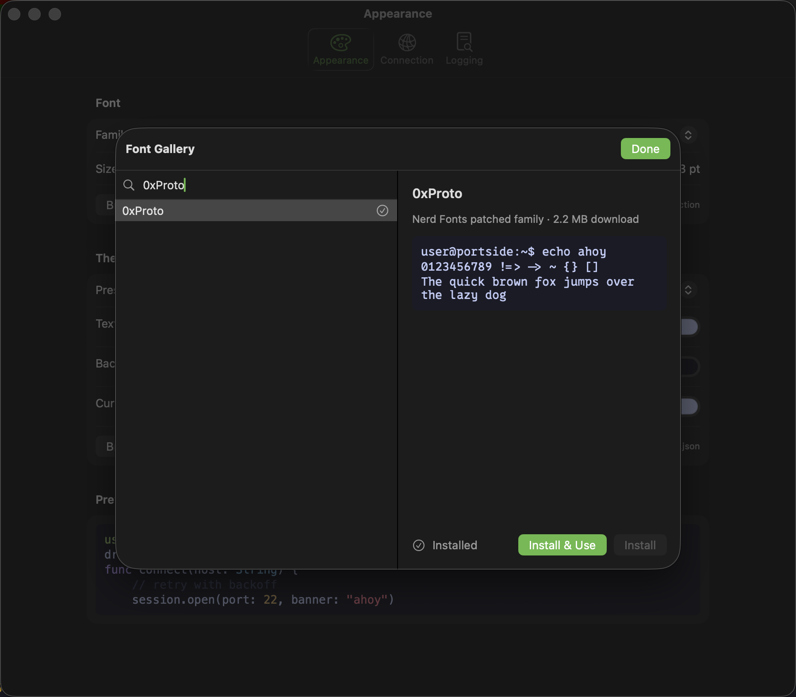
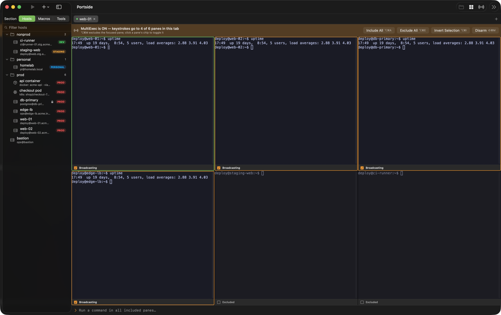
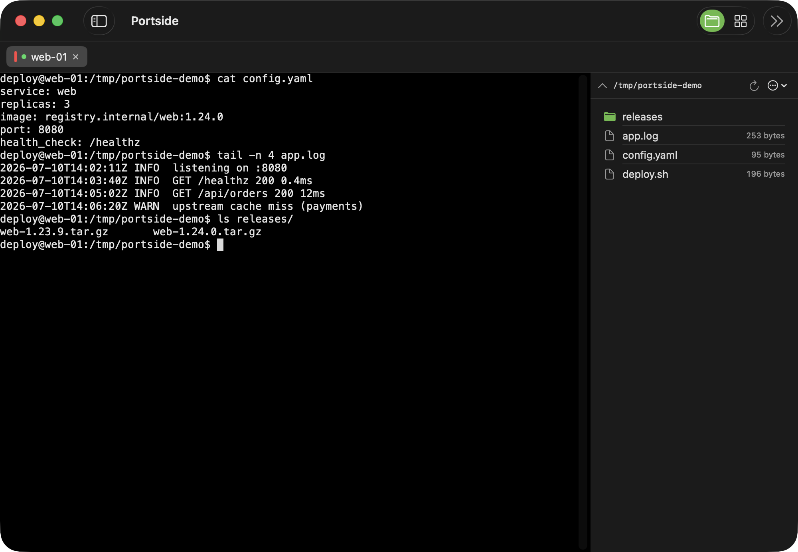
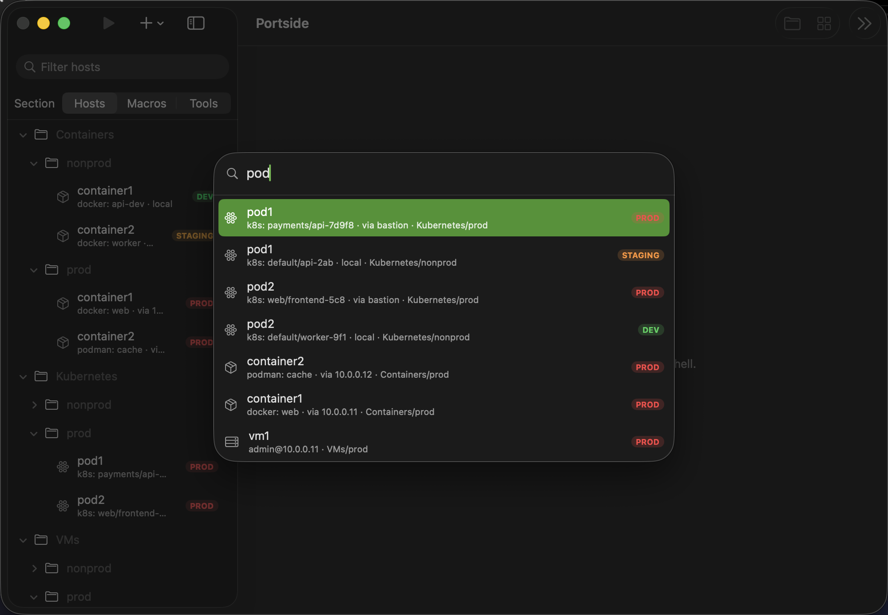
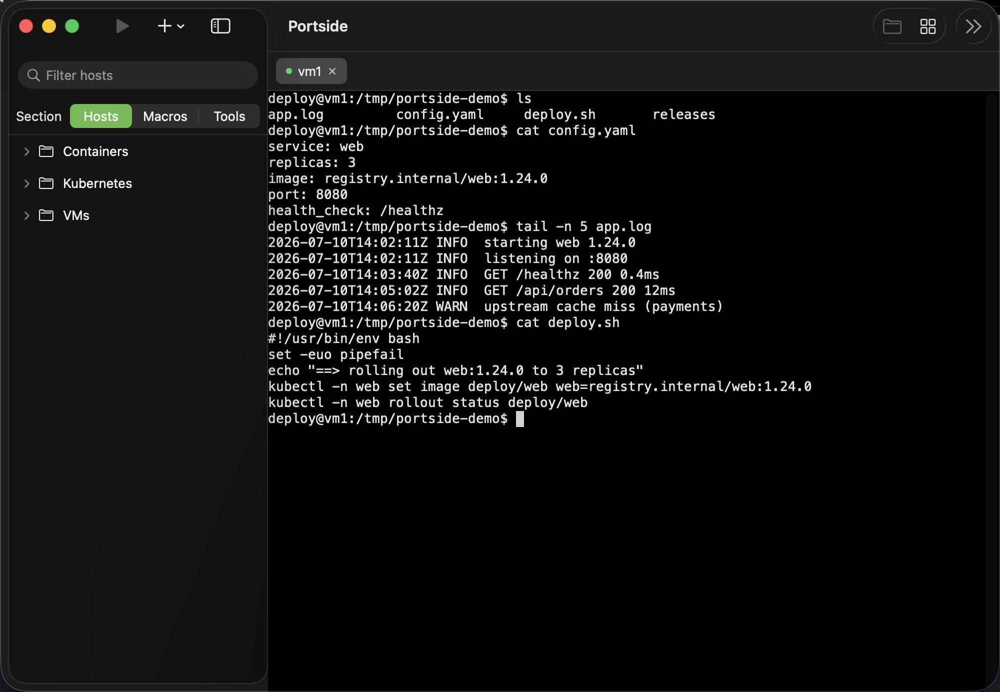

A native macOS workbench for SSH, mosh, serial consoles, and telnet. Keep hosts, containers, and Kubernetes pods in one foldered library, with MultiExec guardrails, SFTP, and port forwarding close at hand.
Notarized by Apple · drag-to-install DMG or Homebrew · auto-updates via Sparkle · macOS 14+ · MIT licensed

SSH and mosh hosts, containers, Kubernetes pods, serial consoles, and telnet endpoints in nested folders with transport and environment badges. Multi-select with the keyboard and drag hosts between folders — a native macOS sidebar.
Broadcast keystrokes across a fleet with a loud armed banner, per-terminal opt-in, and protected hosts that refuse to join uninvited.
Split any tab (⌘D / ⌘⇧D), navigate by mouse or keyboard, and arm a split for MultiExec to drive a whole group side by side. Your layout comes back on restore.
Save a docker/podman container or a kubectl pod like any host — browse live docker ps / get pods instead of remembering churning names.
The file browser rides your existing SSH session — no second login — with drag-and-drop transfer. Tunnels managed beside your terminals.
Roam across networks with mosh, bridge directly to /dev/cu.* serial devices, or reach legacy telnet endpoints with a clear unencrypted warning.
31 bundled color schemes plus in-app galleries: browse ~600 themes and the entire Nerd Fonts collection, preview live, install with one click.
Configurable scrollback (up to 100k lines), optional GPU (Metal) rendering, block/underline/bar cursor styling, and a tested compatibility matrix — truecolor, Unicode, mouse, and more.
Your library is a JSON file on your disk. Passwords live in the macOS Keychain. Signed, notarized, auto-updating — and MIT-licensed open source.
Press ⌘K to fuzzy-search every saved target, or search hosts right from the welcome tab the + button opens. Jump straight back into recent sessions from either.
Reopen the tabs you had open when you last quit — hosts reconnect, local shells start fresh, and MultiExec groups come back disarmed. Off, ask, or automatic.
Replay named command sequences in one terminal or across MultiExec, with searchable per-target logs and automatic compression.
A full Settings page lists every keyboard shortcut with click-to-record rebinding, conflict detection, and one-click reset — no config file editing required.
Right-click to duplicate a tab or reopen the last one you closed (⇧⌘T). An overflowing tab strip grows scroll chevrons automatically — no keyboard shortcut required to find the rest of your tabs.





